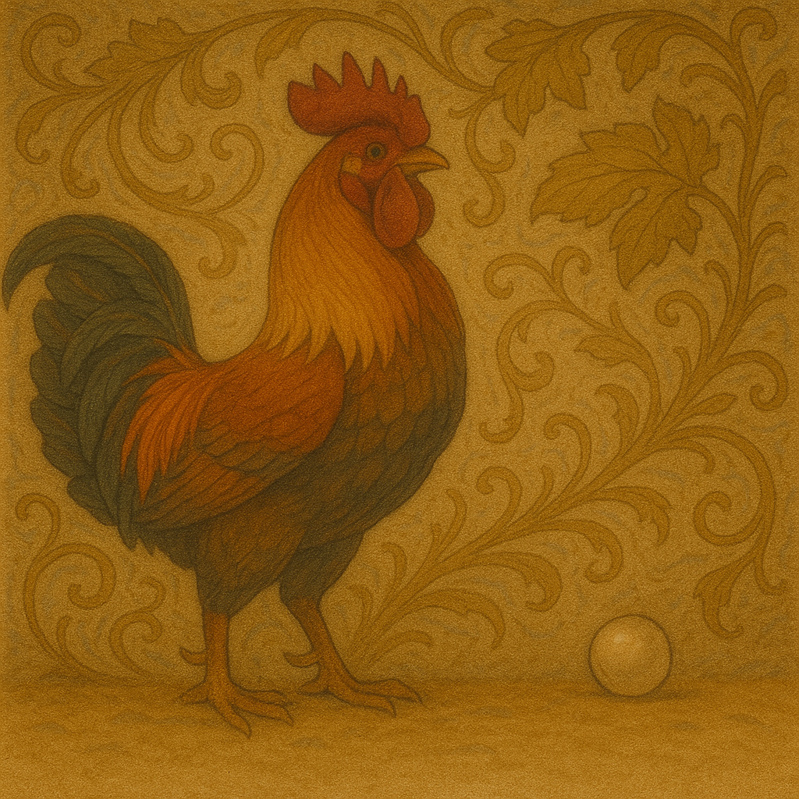

O Galo e a Pérola
Certo dia, um galo ciscava no terreiro à procura de comida. Ele estava com muita fome, procurando grãos entre a palha e o barro, quando encontrou uma linda pérola.
“O que eu faria com isso?”, disse o galo. “Prefiro um simples grão de milho do que essa joia inútil para mim.”

Moral: Aquilo que não tem valor prático para alguém, mesmo sendo precioso, será ignorado.
✨ Reflexão Filosófica:
Esta fábula nos provoca a pensar sobre o valor subjetivo das coisas.
Quantas vezes descartamos algo valioso por não compreendermos sua essência?
O galo representa aquele que, limitado pela necessidade imediata, deixa escapar algo de valor duradouro.
Será que em nossas rotinas também estamos rejeitando “pérolas” por só procurarmos “grãos”?